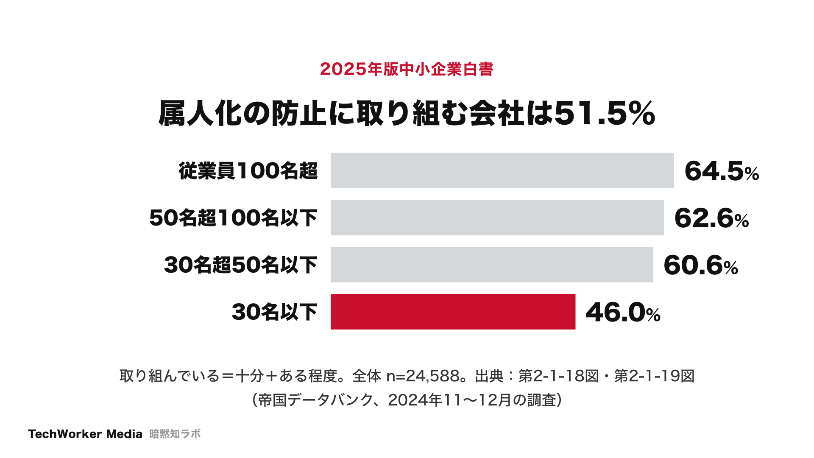
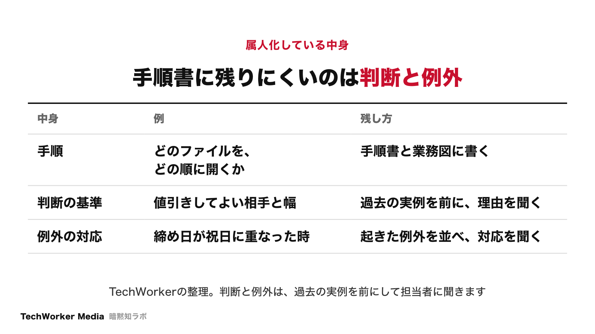
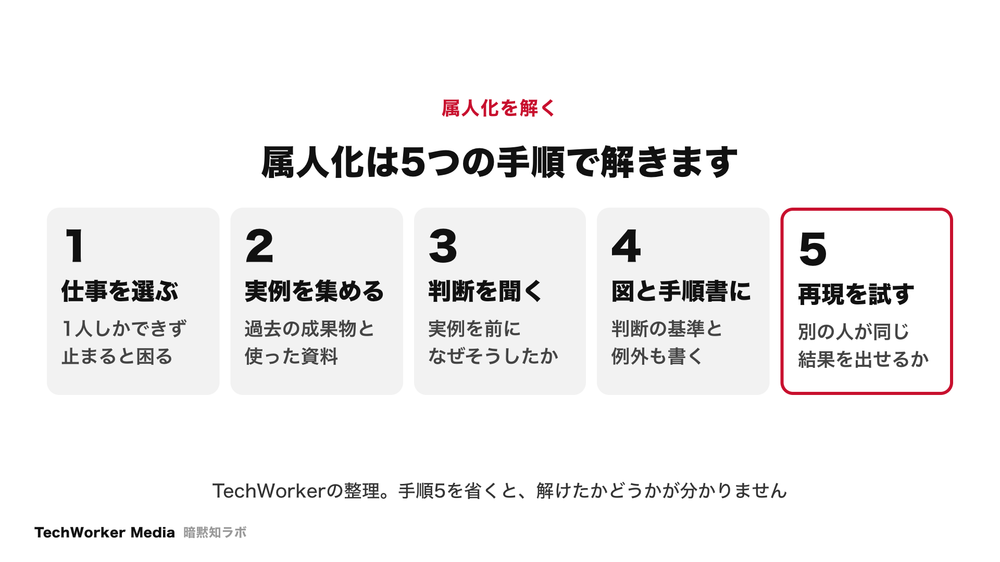
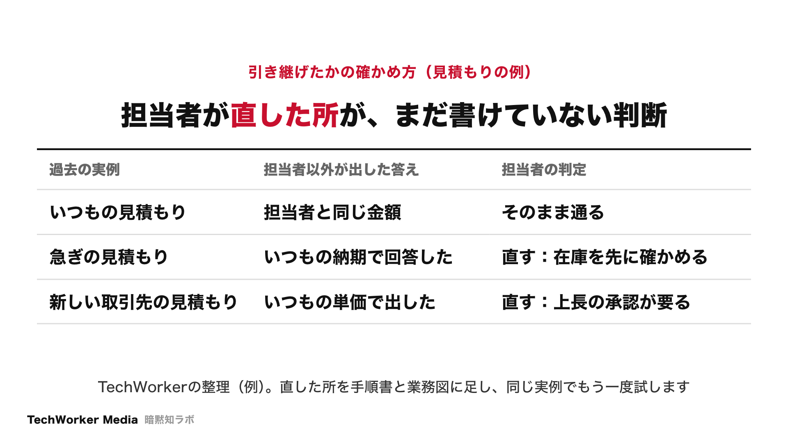
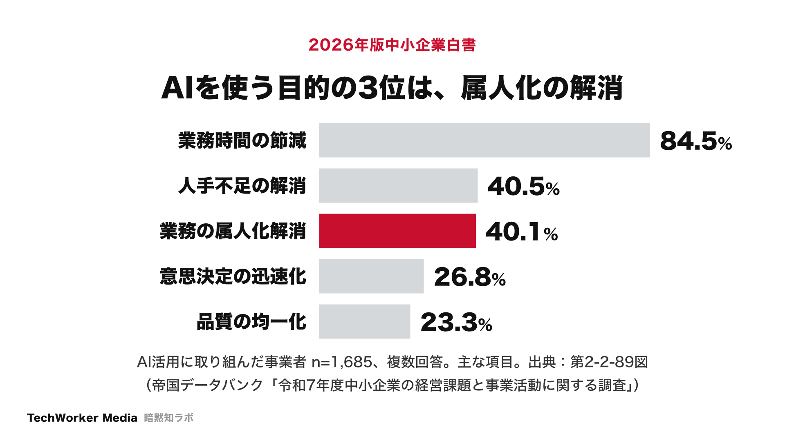

業務の属人化とは、特定の担当者しかやり方や判断の理由を知らず、その人がいないと仕事が止まる状態です。中小企業庁の中小企業白書は2025年版と2026年版で業務の属人化を取り上げています。
- 取り組み：業務の属人化・ブラックボックス化の防止に取り組む事業者は51.5%で、従業員30名以下では46.0%です（2025年版）。
- 業績との関係：取り組んでいる事業者の付加価値額の変化率（2018年と2023年の比較、中央値）は11.4%で、取り組んでいない事業者の5.9%を上回ります（2025年版）。
- AIの目的：AI活用に取り組んだ事業者の40.1%が、目的に業務の属人化解消を挙げています（2026年版）。
原文（日本語）「業務の属人化から脱却することで、ボトルネック工程の削減や業務の標準化による効率アップにつながっているとも考えられる。」
この記事では、白書の数字を確かめたうえで、手順書だけでは属人化が残る理由、担当者に聞くこと、引き継げたかを過去の実例で確かめる5つの手順、AIを使う所と人が決める所をまとめます。
業務の属人化とは、何ですか？
特定の人しか、やり方や判断の理由を知らない状態です。その人が休むか辞めると、仕事が止まるか、仕上がりが変わります。
属人化しているかは次の4つの問いで見分けます。
- 担当者が2週間休んだら、その仕事は誰が代わりますか。
- 代わりの人は、何を見て判断しますか。
- 担当者のやり方と、手順書に書かれたやり方は同じですか。
- あの人に聞かないと決まらない、と言われる仕事はどれですか。
専門性の高い仕事でも、判断の基準と例外の対応が書かれ、ほかの人が中身を確かめられるなら、担当者が休んでも仕事は止まりません。問題になるのは、ほかの人が中身を確かめられず、代わりもいない状態です。手順書に書かれず人の頭の中にある判断や勘は暗黙知と呼ばれ、意味と残し方は暗黙知とはで説明しています。
属人化の解消に取り組む会社は、どのくらいありますか？
2025年版中小企業白書では、業務の属人化・ブラックボックス化の防止に取り組む事業者は51.5%です。従業員30名以下では46.0%で、規模が小さいほど割合が下がります。

数字の元は、帝国データバンクが2024年11月から12月に行ったWebアンケート「令和6年度中小企業の経営課題と事業活動に関する調査」です。取り組んでいるは、十分取り組んでいる・ある程度取り組んでいると答えた事業者の合計です。
| 従業員の規模 | 取り組んでいる | 取り組んでいない | 回答数 |
|---|---|---|---|
| 全体 | 51.5% | 48.5% | 24,588 |
| 100名超 | 64.5% | 35.5% | 2,169 |
| 50名超100名以下 | 62.6% | 37.4% | 2,866 |
| 30名超50名以下 | 60.6% | 39.4% | 3,145 |
| 30名以下 | 46.0% | 54.0% | 16,408 |
出典：2025年版 中小企業白書 第2部第1章第2節の第2-1-18図・第2-1-19図（資料は帝国データバンク）
取り組みの有無で付加価値額の変化率（2018年と2023年の比較、中央値）を比べると、取り組んでいる事業者は11.4%（n=9,032）、取り組んでいない事業者は5.9%（n=6,930）でした（第2-1-22図）。この数字は、取り組んでいる会社ほど付加価値額が伸びているという傾向です。取り組みが伸びの原因だとまでは、この比較だけでは言えません。
白書は同じ節で、属人化から抜け出すことは、属人化した担当者の退職などによるノウハウの喪失や業務の停滞を防ぐことにもつながると書いています。
なぜ手順書を作っても、属人化が残るのですか？
手順は書けても、判断の基準と例外の対応が書かれずに残るからです。属人化している中身を手順・判断の基準・例外の対応の3つに分けると、それぞれの残し方が決まります。

| 属人化している中身 | 例 | 残し方 |
|---|---|---|
| 手順（何を、どの順でやるか） | 月次の締めで、どのファイルをどの順に開くか | 手順書と業務図に書き、画面の写しを添える |
| 判断の基準（どう決めるか） | 見積もりで値引きしてよい相手と幅 | 過去の実例を前に、なぜその答えにしたかを聞いて書く |
| 例外の対応（いつもと違うとき） | 取引先の締め日が祝日に重なったとき | 過去に起きた例外を並べ、それぞれの対応と、誰に確かめたかを書く |
TechWorkerの整理
手順書を書くと、いつもの流れは残ります。判断の基準と例外の対応は、いつもの流れを順に書く手順書には出てきにくいため、過去の件を前にして担当者に聞きます。手順書を作ったのに担当者への問い合わせが減らないときは、この2つが抜けています。
属人化を解消するには、どう進めますか？
仕事を選ぶ、実例を集める、判断を聞く、業務図と手順書にする、再現を試すの5つの手順で進めます。最後の再現を試す手順を省くと、属人化が解けたかが分かりません。

- 仕事を選ぶ：全部の仕事を一度に扱わず、1つに絞ります。先に選ぶのは、1人しかできず、止まるとお客さんへの対応や期限に響く仕事です。担当者が2週間休んだら止まるかで見分けます。
- 実例を集める：実例とは、その仕事で過去に実際に作った物と、作るときに使った資料の組です。見積もりなら、見積書と、元になった見積依頼・単価表・過去の見積もりです。いつもの件に加えて、急ぎの件や新しい取引先の件のような例外も集めます。取引先名や個人の情報は、使う前に伏せます。
- 判断を聞く：実例を1件ずつ前にして、担当者に聞きます。実例があると、その件で実際に見た物と決めた理由を聞けます。聞くことの例は下の6つです。
- 業務図と手順書にする：誰が、どの順で、何を使って進め、どこで判断するかを1枚の業務図にします。判断の所には基準を、例外には対応と確かめる相手を書きます。細かい操作は手順書に分けます。
- 再現を試す：担当者以外の人に、実例の資料と、書いた業務図・手順書だけを渡し、同じ結果を出せるかを試します。確かめ方は次の節で説明します。
手順3で聞くことの例です。
- この件で、最初に何を見ましたか。
- なぜこの金額、順番、相手にしましたか。ほかに考えた案はありましたか。
- いつもと違う件はどこで見分けますか。
- 手順書と違うやり方をするのは、どんなときですか。
- 迷ったときは、誰に何を確かめますか。
- この仕事で、やってはいけないことは何ですか。
業務図を担当と工程ごとに書き込む空の型は、下の枠から受け取れます。経理、人事労務、製造など、6つの部署の例も入っています。
引き継げたかは、どう確かめますか？
過去の実例の資料を担当者以外の人に渡し、業務図と手順書だけで同じ結果を出せるかで確かめます。担当者が直さずに通せた件は、引き継げています。担当者が直した所が、まだ書けていない判断です。

| 過去の実例 | 担当者以外が出した答え | 担当者の判定 | 次にやること |
|---|---|---|---|
| いつもの見積もり | 担当者と同じ金額 | そのまま通る | なし |
| 急ぎの見積もり | いつもの納期で回答した | 直す：急ぎは在庫を先に確かめる | 判断の基準として業務図に足す |
| 新しい取引先の見積もり | いつもの単価で出した | 直す：新しい取引先は上長の承認が要る | 例外として業務図と手順書に足す |
TechWorkerの整理。見積もりを例にした説明用の表で、実際の会社の記録ではありません
確かめるときは、次の3つを守ります。
- 試す人はその仕事をしたことがない人にします。担当者は横で口を出さず、出た結果だけを見て判定します。
- 直した所は、何を見落としたか、どう決めるのが正しいかを担当者に聞き、業務図と手順書に足します。
- 足した後は、同じ実例でもう一度試します。すべての実例で担当者が直さずに通せるまで繰り返します。
同じ確かめ方は仕事をAIに任せるときにも使えます。TechWorkerのギョウムズAIは公式ページに、過去の実例30件で確かめ、すべての件を正しく出力できた工程からAIに任せると書いています。引き継ぐ相手が人でもAIでも、過去の実例で同じ結果が出るかで、引き継げたかを判定できます。
白書に載った会社は、どう進めましたか？
2025年版小規模企業白書の大福輸送株式会社は、ベテラン役員の仕事を社長と3人の社員で聞き取ってデータにしました。2026年版中小企業白書の岡田研磨株式会社は、AIを使った手順書の仕組みを作り、手順書を増やしました。
大福輸送株式会社（埼玉県さいたま市、従業員20名、総合工事業）では、対外折衝や施工管理、社内のリソースの管理・手配の業務が70代の役員に集中していました。社長は2022年の就任後、業務の棚卸しとあわせて20〜40代の3人の社員を配置し、ベテラン役員の業務内容やノウハウを細かく聞き取ってデータにしました。
原文（日本語）「田子山社長と共に、ベテラン役員の業務内容やノウハウ等を細かく聞き取りデータ化することで、属人化・暗黙知化していた業務の形式知化ができ、次世代の社員へのノウハウの承継が実現した。」
岡田研磨株式会社（石川県金沢市、金属製品製造業）は、AIを活用した手順書管理システムを自社で開発し、従業員が自由に手順書を作れるようにしました。白書によると、約150件だった手順書は導入から4か月で約240件増え、手順書を使った教育で多能工化と業務の平準化が進みました（2026年版 中小企業白書 第2部第2章第2節の事例2-2-14）。
2社に共通するのは、ベテランの頭の中にあった仕事を、聞き取るか書き出すかして、ほかの社員が使える形にした点です。白書の事例には、別の人が過去の実例で同じ結果を出せたかの確かめ方までは書かれていません。そこを補うのが、前の節で説明した確かめ方です。
AIはどこに使い、人は何を決めますか？
聞き取りの質問と記録の下書き、業務図と手順書の下書き、過去の実例で答えを出してみる作業はAIに任せられます。どの仕事から始めるか、判断の基準が正しいか、法令や安全に関わる判断は人が決めます。

2026年版中小企業白書では、AI活用に取り組んだ事業者（n=1,685、複数回答）がAIを使う目的は、業務時間の節減が84.5%で最も多く、人手不足の解消（40.5%）、業務の属人化解消（40.1%）が続きます（第2-2-89図）。AIの使い方ごとに、任せる所と人が決める所を分けると次のとおりです。
| 場面 | AIに任せる所 | 人が決める所 |
|---|---|---|
| 聞き取り | 実例と資料から質問の下書きを作る。録音を文字にし、要点を書き出す | 何を聞くかを選ぶ。話の裏を実例で取る |
| 業務図と手順書 | 聞き取りの記録から下書きを作る。言い回しをそろえる | 担当者が読み、違う所を直して承認する |
| 再現の試し | 実例の資料と業務図・手順書から答えを出してみる | 担当者が答えを見比べ、通すか直すかを決める |
| 更新 | 新しい実例と手順書の食い違いを挙げる | 直すかどうかを決め、版と日付を残す |
TechWorkerの整理
生成AIは文字起こしを誤ったり、記録に無いことをもっともらしく書いたりすることがあります。AIが作った下書きは、担当者が読んで直してから使います。お客さんへの送信、金額の確定、法令や安全に関わる判断は、人が承認する工程として業務図に書いておきます。
社内の記録をAIに入れる前に確かめるのは、会社が契約したAIの設定と社内の規程です。主なAIの法人契約の違いは生成AIの法人契約の比較にまとめています。
聞き取りから業務図を描き、AIに任せる工程を決める流れはAIに任せる業務の決め方で、製造の現場でベテランの判断を残す進め方は技術承継・技能伝承の進め方で説明しています。
よくある質問
専門性は、その人の知識や技術が高いことです。属人化は、ほかの人が仕事の中身を確かめられず、代わりもいない状態です。専門の仕事でも、判断の基準と例外の対応を書いておけば、ほかの人が中身を確かめられます。
いつもの手順は残りますが、判断の基準と例外の対応は抜けやすくなります。過去の実例を前に担当者に聞いて書き足し、担当者以外の人が同じ結果を出せるかを試して確かめます。
目的を、担当者が休める体制をつくることと、担当者の退職などで仕事が止まるのを防ぐことに置いて伝えます。聞き取りは実例1件ずつに区切り、担当者の時間を取りすぎないようにします。
2025年版中小企業白書では、従業員30名以下で属人化の防止に取り組む事業者は46.0%です。2025年版小規模企業白書の事例の大福輸送株式会社は従業員20名で、ベテラン役員の業務を3人の社員と社長で聞き取りました。仕事を1つに絞れば、小さい会社でも始められます。
答えは、会社が契約したAIの設定と社内の規程で変わります。入れた内容を学習に使うか、どこに保存するか、誰が使えるかを、使う前に確かめます。取引先名や個人の情報は、伏せてから使います。
次の一歩は何から始めればよいですか？
担当者が2週間休んだら止まる仕事を、1つ選ぶところから始めます。
- 止まると困る仕事を1つ選び、担当者と、引き継ぐ相手を決めます。
- その仕事の過去の実例を、いつもの件と例外の件を合わせて集め、使った資料も一緒に置きます。
- 上の6つの質問をもとに、担当者に判断と例外を聞く日を決めます。
出典と確認範囲
確認日：2026年11月24日。白書の数字は中小企業庁のサイトのHTML版の図から読み取りました。2025年版の調査は、帝国データバンクが2024年11月から12月に行ったWebアンケートです（第2部第1章の注）。2026年版の第2-2-89図の調査の時期は、この記事では確かめていません。付加価値額の変化率は取り組みの有無ごとの中央値の比較で、原因と結果の関係を示す物ではありません。3つの型、5つの手順、確かめ方、AIと人の分担はTechWorkerの整理です。見積もりの確かめ方の表は説明用の例で、実際の会社の記録ではありません。ギョウムズAIの進め方は公式ページに書かれていることだけを使いました。
- 中小企業庁「2025年版 中小企業白書」第2部第1章第2節 経営の透明性・開放性（HTML版）（第2-1-18図・第2-1-19図・第2-1-22図。資料は帝国データバンク「令和6年度中小企業の経営課題と事業活動に関する調査」）
- 中小企業庁「2025年版 小規模企業白書」第2部第1章第1節 小規模事業者の経営力の向上（HTML版）（事例2-1-10 大福輸送株式会社）
- 中小企業庁「2026年版 中小企業白書」第2部第2章第2節 労働投入量の最適化（HTML版）（第2-2-89図。資料は帝国データバンク「令和7年度中小企業の経営課題と事業活動に関する調査」。事例2-2-14 岡田研磨株式会社）
- 中小企業庁「中小企業白書」の一覧
- TechWorker「ギョウムズAI」